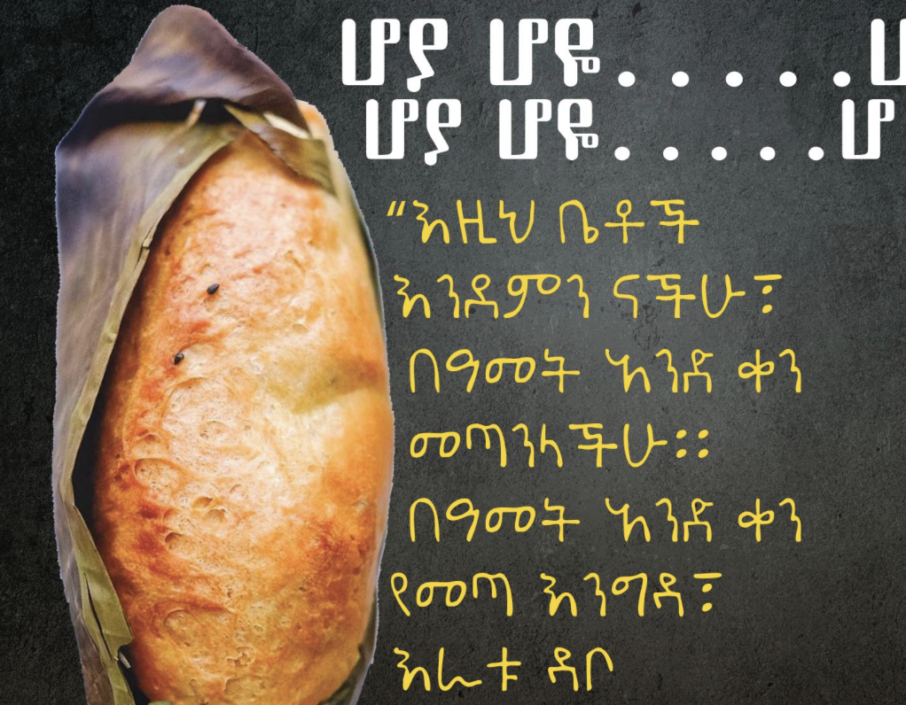
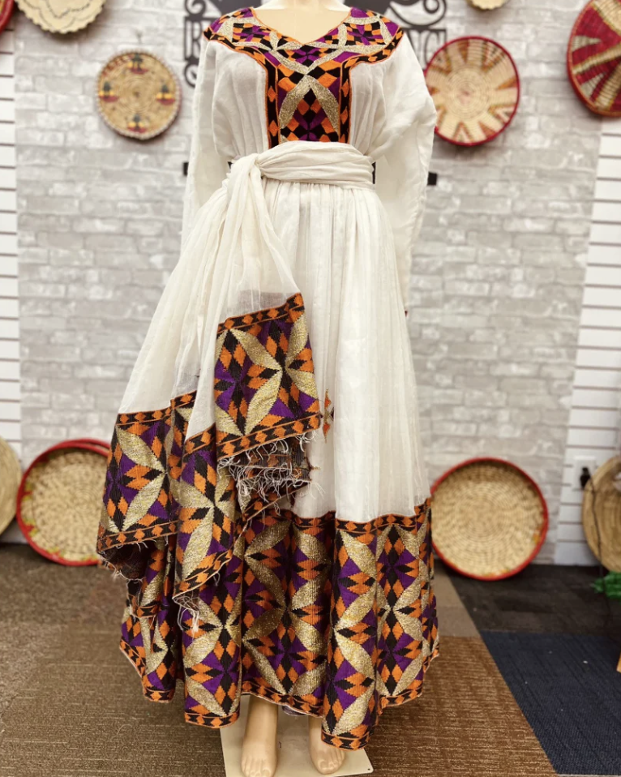
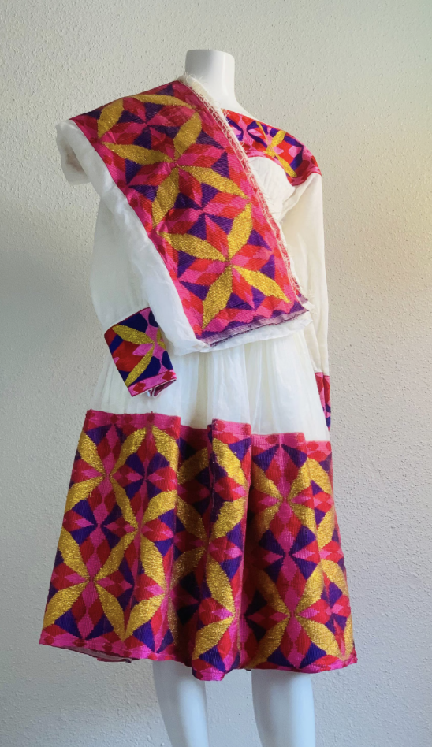
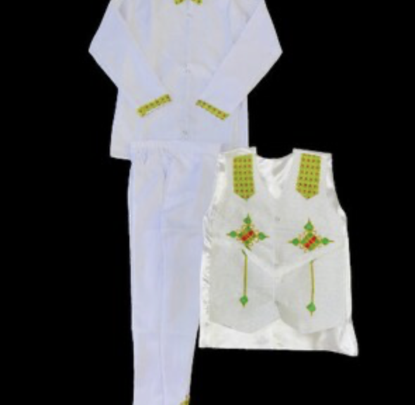
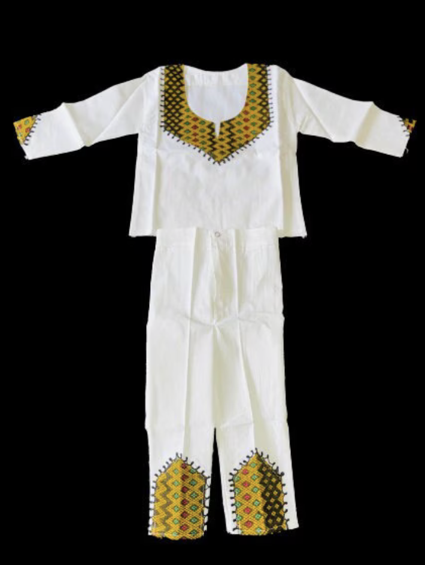
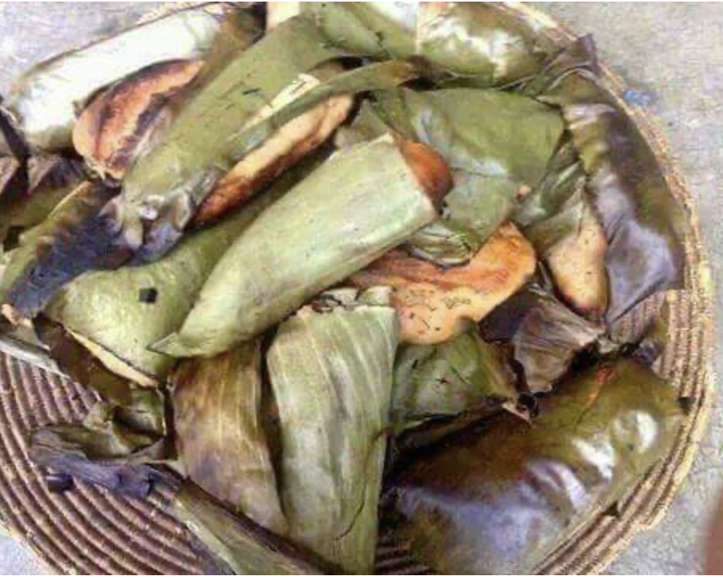
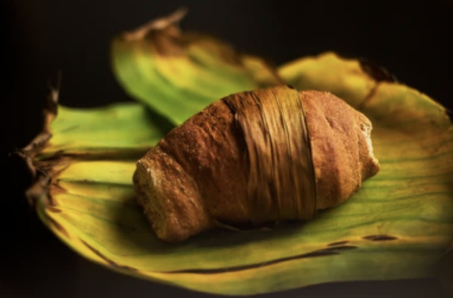

ቡሄ (Buhe)
ቡሄ is a traditional Ethiopian festival celebrated on Nähase 13 in Ethiopian calender(August 19), known for its unique cultural rituals and community spirit. The festival is particularly popular among children, who play a central role in its observance. The main activity associated with Buhe is the singing of songs, known as "Hoya Hoye," by groups of boys who go from house to house. These songs are accompanied by rhythmic clapping and the beating of sticks, creating a lively and festive atmosphere. The children receive gifts, typically in the form of fresh bread called "mulmul" or small amounts of money, as a token of appreciation for their performances.
The attire worn during Buhe is more than just clothing; especially, The traditional outfits worn by boys during this festival help to preserve cultural heritage and instill a sense of pride and community. As the boys go from house to house singing "Hoya Hoye," their outfits enhance the festive spirit and highlight the importance of tradition in Ethiopian society.
 
 
During ቡሄ the most popular food is ሙልሙል ዳቦ(mulmul dabo) because this holiday is on a fasting season
 